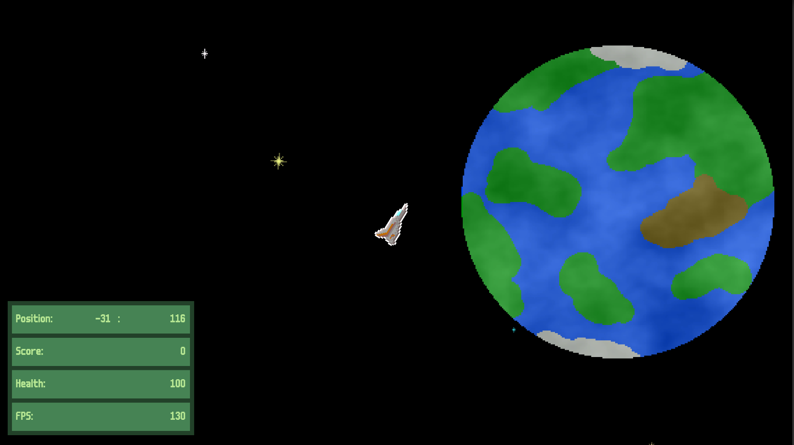
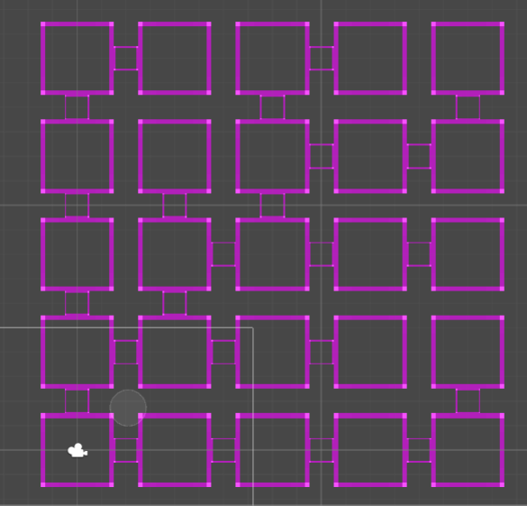
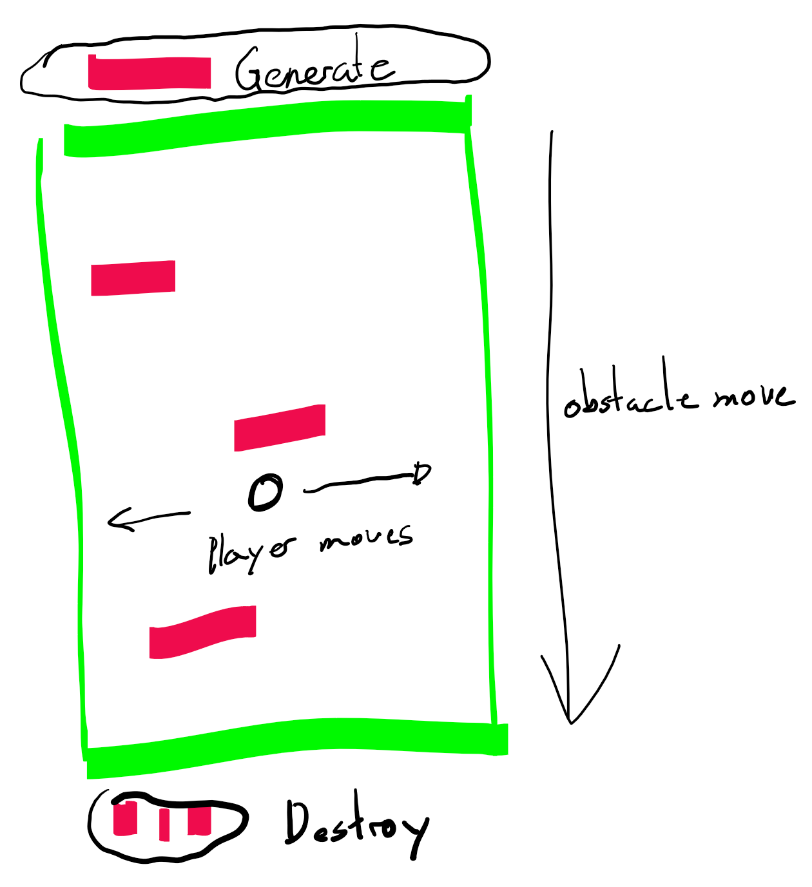

No, I'm not growing totaly made and playing start to play god from now on, we are talking about my Game "Argh, there she blows". Until now the game world you could play in, was fairly small. It was already generated randomly based on a seed but it wasn't large enough. On this page I will explain the basics of how I programmed a universe which will take a player 18 days straight from 0,0 to reach the border of the universe - in every direction!

Please note, I'm not an 'Expert' in this field. Don't you dare cite my in some kind of sientific
work please! This is just my personal understanding of the matter based on my own experience. Ok
Boomer, we get it your not a scientist (in this matter).
If you look at my currently 3 Games you might realize that two of them have some random
generated mechanics.
In AI-Buster (basically a simple dungeon crawler with tanks) at the beginning of each round a unique dungeon gets generated based on a seed. I solved that by using a methode called "binary space partitioning" look at it here. The result looks something like this:
This couldn't be used for the current game as there is no way a computer can generate the whole "endless" universe at the beginning of each game. This was to static.
A second approach used for on of my never finished prototype (some people might say it looks similair to Doodle-jump (or flappy bird, or...) is the following approch:
The player moves constantly in one direction (or the world moves and the player stands still?)
In front of him (just outside the screen) obstacles and loot is generated, objects which leave the
screen on the other side get (as we say in unity) destroyed, BOOM!
This also couldn't be used, because we wan't to move in all direction dha!
As you might have seen in one of my older blog entries I would like to organize my universe into smaller sections. These sections I can then load and unload based on their distance to the player. To describe such a section I use a seed. Basically each section gets loaded with: "InitSection(seed);". So what I'm searching is a methode which allows my to always get the same seed at the same position. Something like:
Seed function
seedSection = generateSeed(x,y); //generate a seed which is always the same depending on position
hm... seeds, sections (chunks) sounds like an other game I'm playing a lot...
There is a mathematical function which basically does exactly what I'm searching for. It
is called Perlin Noise. Read about it here.
Minecraft uses it and has a nearly endless world, so it has to be good right?
Well... no. I mean Notch did a fantastic job creating a random landscape using perlin noise,
and thats because perlin noise is meant to be used for landscapes. Lets look at an example:
If we look at the image we see some different shades of grey, 255 shades of grey to be exact. Each of those grey colorvalues is represented by a floating number ranging from 0-1. Which means that some of those white or black spots are exactly 0 or 1 which means that an awfull lot of the ccordinates give back the same two seeds. And even worse, there might be whole regions of the exactly the same section. Soooo... not what we are searching either.
After some further researching I found the following gem. In this forum entry the user alvaro provides us with the following piece of code:
Random long based on coordinates
long hash(long x, long y) {
long result = x;
result *= MAGIC_CONSTANT_1|1;
result += MAGIC_CONSTANT_2;
result = (result>>32) + (result<<32);
result ^= MAGIC_CONSTANT_3;
result += y;
result *= MAGIC_CONSTANT_4|1;
result += MAGIC_CONSTANT_5;
result = (result>>32) + (result<<32);
result ^= MAGIC_CONSTANT_6;
result *= MAGIC_CONSTANT_7|1;
return result;
}
I just had to invent som random seven constants to replace the MAGIC_CONSTANT_X values and Bazinga! I could create random seeds based on coordinates. It works like a charm.
In combination with my already described loading and unloading algorithym I was no able to create
an endless world. Theoretically...
There was one more problem to be solved. Unity uses a float value for each the horizontal (x) and
vertical (y) axis used in the transform.position Vector2. Floating numbers, have a weird beheaviour
of beeing very precise in the lower values (-5000 to 5000) and getting less and less percise the further
away from 0:0. In most cases this shoudn't make a difference, in this case it might at some point.
For now, I just mentioned it here, stay tuned for the next blog entry. So what stays is to show you the
result.